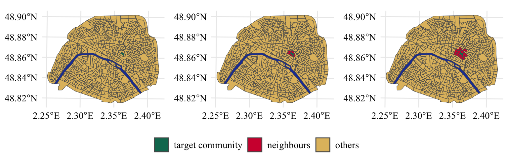
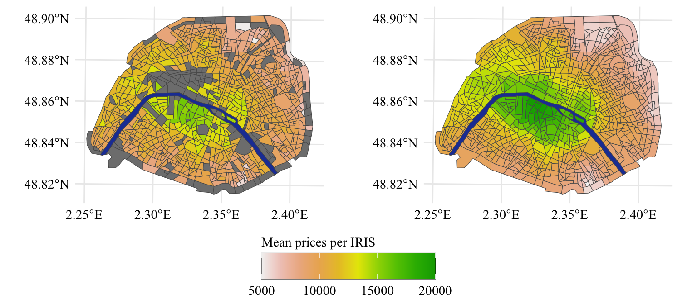
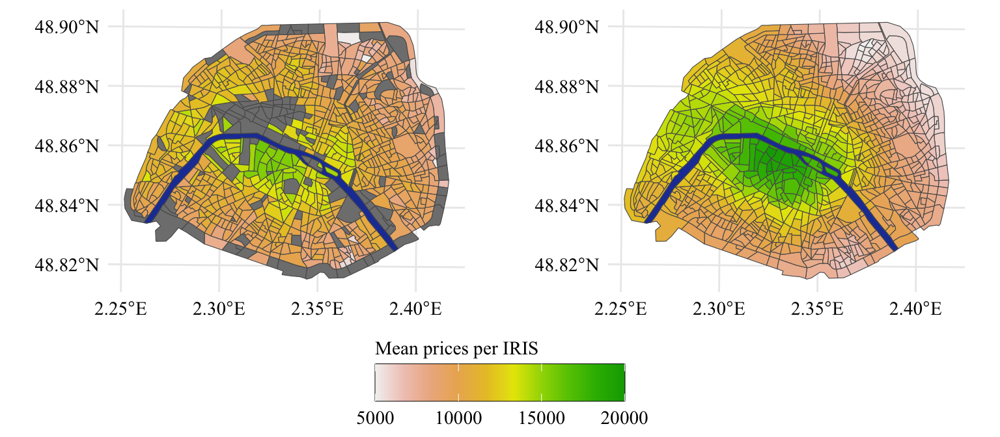
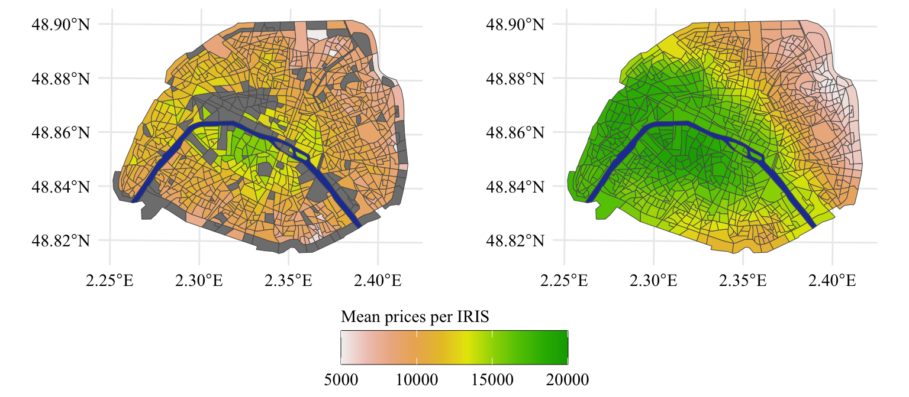
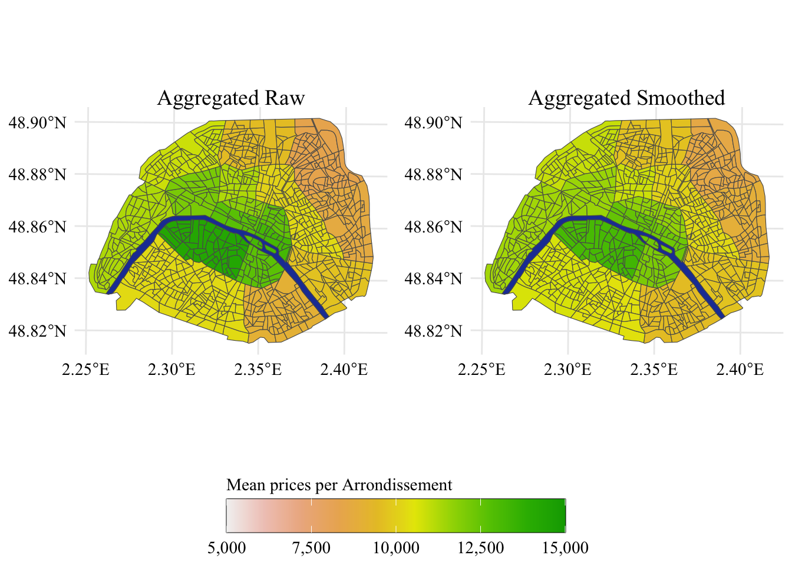
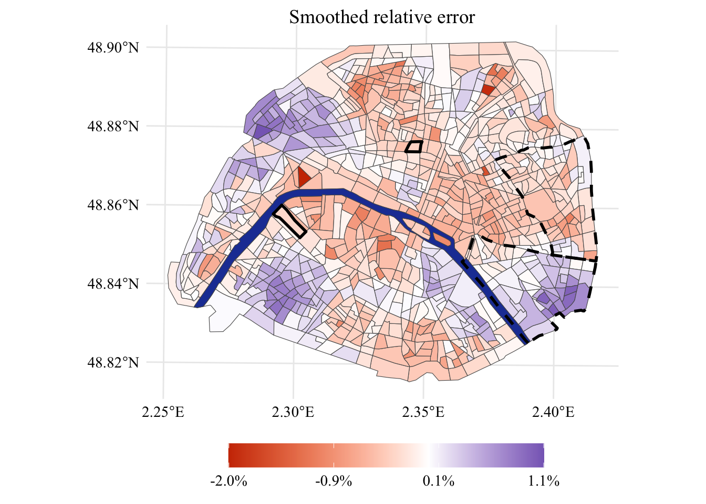

The spatial information of the properties is given at the IRIS level. However, in some IRIS, as shown in Figure 2.1, there are no observations. We will therefore use a spatial smoothing to impute values in all IRIS.
The size of the area of each IRIS differs considerably. Hence, smoothing the observation by simply defining higher levels by Euclidean distance from a given point might pose problems, as it could include many dense but heterogeneous regions on one end of the spectrum or only a few on the other. Instead, we will define a neighborhood graph (see the paper for a formal definition).
We will hereafter denote \(i\) and \(j\) the polygons of the ith and jth IRIS, respectively.
The neighborhood graph can be represented by an \(n\times n\) matrix named an adjacency matrix, denoted \(A\).If regions \(i\) and \(j\) intersect, \(A_{i,j}=1\), and \(A_{i,j}=0\) otherwise. Representing neighborhood relations using an adjacency matrix has the advantage that non-intermediate connections can be easily obtained by successively multiplying the adjacency matrix by itself. That is, all nonzero elements of \(A^2\) represent neighborhoods that are either immediately adjacent to a given region (the direct neighbors) or are adjacent to the direct neighbors (the neighbors of the direct neighbors). This process can be repeated \(n\) times to obtain neighbors that can be reached within an \(n\) length path. This provides a more natural way to define neighborhoods, as with each increasing path length, an entire homogeneous region is added to the higher-level aggregation.
Let us construct a neighborhood graphs with R, using {igraph}.
library(igraph)
Here we need the Seine River as well. Otherwise, we cannot find neighbors.
Let us focus on a particular IRIS and visualize it and its neighbors on a map. We will produce three maps: one which only shows the particular IRIS, another one which also its immediate neighbors, and a third one which shows the neighbors immediately adjacent or adjacent to the direct neighbor.
Figure 2.2: A sampled IRIS region within Paris (left pane) and its immediate adjacent neighbors (center pane) and the second level neighbors (right pane). The Seine River is depicted in blue whereas all other regions are depicted in yellow.

2.3 Spatial Price Smoothing
For a given variable observed at IRIS level \(x\), the smoothed value for region \(r_i\), denoted as \(\lambda_\omega(x_i)\) can be written as:
\[\begin{align}
\lambda_{\omega}(x_i) = \frac{1}{\sum_{j=1}^{n} {\omega}(r_i,r_j)}\sum_{j=1}^n {\omega}(r_i,r_j) x_i \enspace.
\end{align}
\tag{2.1}\] For example, let \(d(r_i, r_j)\) be the path length between regions \(r_i\) and \(r_j\), then a simple way to define \(\omega(r_i,r_j)\) is: \[
\begin{align}\label{eq:weights}
\omega(r_i,r_j)=
\begin{cases}
\frac{1}{(1+d(r_i,r_j))^p},\quad & \text{if } d(i,j) \leq m \\
0, & \text{otherwise} \enspace,
\end{cases}
\end{align}
\tag{2.2}\] where \(p\) and \(m\) are hyperparameters to be selected, similar to the bandwidth operator.
We initiate the neighborhood matrix by putting the values we just computed:
neigh_matrix <- adj_matrix_lev_1
Then, we can increase the neighborhood distance \(m\) so that it takes values from 2 to 30 in steps of 1. This allows us to get each IRIS which are distant from one another by a value lower or equal to \(m\).
Now that we have obtained the adjacency matrices from \(m=\{1, 2, \ldots, 30\}\), we can create a tibble which will contain the distance from each polygon to all the other polygons (provided the maximum distance is lower or equal to 30).
We first populate the desired object, all_neighbours with all the IRIS which have a distance equal to 1:
Let us use this to plot the observed prices per square meter, on a choropleth map. We will display the unsmoothed version on the left and the smoothed version on the right. The smoothed version is computed using Equation 2.1. We will use here a distance \(m=5\).
Square meter prices by IRIS (raw values on the left, smoothed values on the right), corresponding roughly to the wealth level of the inhabitants.

Square meter prices by IRIS (raw values on the left, smoothed values on the right), corresponding roughly to the wealth level of the inhabitants.

Square meter prices by IRIS (raw values on the left, smoothed values on the right), corresponding roughly to the wealth level of the inhabitants.

First, we compute the median observed price in each IRIS of the dataset, using the raw values. Then, we add the smoothed prices computed earlier (using \(m=\) 5), for each IRIS. Then, we aggregate the values at the arrondissement level (column NOM_COM in the map data): we compute the average of the median IRIS prices and the average of the smoothed version.
Figure 2.3: Re-Aggregated data, left pane, mean per arrondissement when the raw, un-smoothed data is used to calculate the average price per square meter of real estate. Right pane, results when the neighbor-smoothed estimates are used.

2.4 Relative Errors in Prices
Let us dig into the relative error between estimated prices and observed ones. First, we compute the mean relative difference between the observed and the estimated price, per IRIS. The is computed as follows \[\frac{z - \hat{z}}{z}\]
The relative errors per IRIS are shown in Figure 2.4.
Display the codes used to create the Figure
scale_val <-seq(min(smoothed_diff$smoothed_diff), max(smoothed_diff$smoothed_diff), length.out =4)p <- shapes_paris |>left_join(smoothed_diff, by ="CODE_IRIS") |>ggplot() +geom_sf(aes(fill = smoothed_diff)) +geom_sf(data = shapes_seine, fill = col_seine ) +geom_sf(data = shape_champs, color ='black', fill =alpha('white', 0),lwd =1, lty ='solid' ) +geom_sf(data = shape_mont, color ='black', lwd =1, fill =alpha('white', 0),lty ='solid' ) +geom_sf(data = shape_12, color ='black', lwd =1, fill =alpha('white', 0),lty ='dashed' ) +geom_sf(data = shape_20, color ='black', lwd =1, fill =alpha('white', 0),lty ='dashed' ) +global_theme() +scale_fill_gradient2(NULL,midpoint =0,high ="#000090",mid ="white",low ="#CD3700",breaks = scale_val,labels = scales::percent(scale_val) ) +theme(legend.position ='bottom' ) +ggtitle('Smoothed relative error')panel_width <-unit(1,"npc") -sum(ggplotGrob(p)[["widths"]][-3])p +guides(fill =guide_colorbar(barwidth = panel_width/2))
Figure 2.4: Relative estimation error per \(m^2\) in different sub-regions. The values are smoothed across spatial neighbors to emphasize the spatial correlation.

2.5 Number of observation per IRIS
Let us also show the number of observation, using the smoothed values. First, we smooth the number of observation in each IRIS: